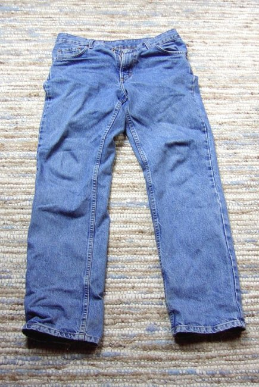
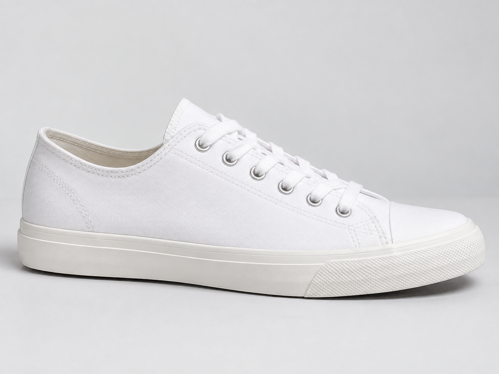
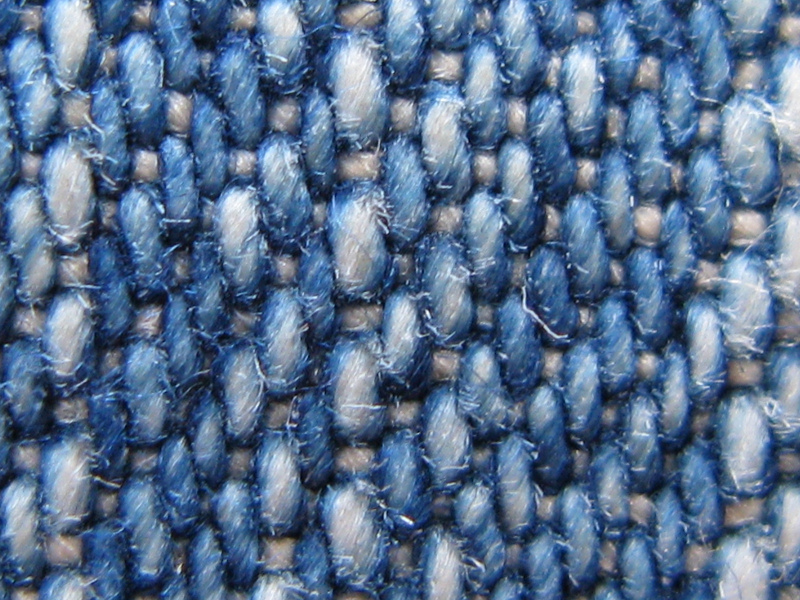

JeansEntreprise support · 1083
Une activité réelle.
Des risques à maîtriser.
Jeans et chaussures donnent à voir l’activité. Le TP commence ensuite par une analyse globale des risques avant d’en approfondir les principaux types.

Chaussures
Savoir-faire textileCrédits des visuels
Jean : Oktaeder / Wikimedia Commons, domaine public. Basket blanche : visuel généré pour ce cas pédagogique, sans marque et ne représentant pas un produit 1083. Denim : Mark Michaelis / Wikimedia Commons, CC BY 2.0. Ces images servent uniquement à construire l’ambiance visuelle de l’accueil et ne constituent pas un catalogue officiel de 1083.
01
Commencer par l’analyse globale des risquesComprendre le fonctionnement de l’entreprise, identifier les risques puis les hiérarchiser avant d’approfondir les risques prioritaires.
Commencer l’analyse →
À approfondir dans le TP
Les principaux types de risques
Situations internes fictives créées pour l’apprentissage. Le bandeau défile automatiquement ; chaque vignette ouvre la situation correspondante.
Deux clés d’entrée : le menu « Parcours du TP » pour suivre la progression, ou un type de risque pour accéder directement à la situation correspondante.